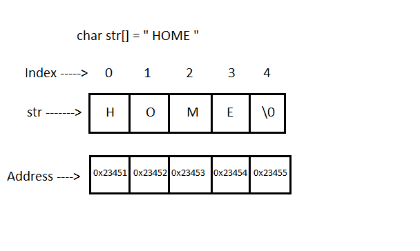
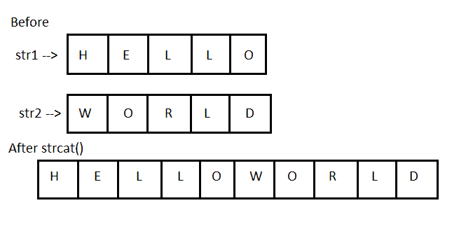
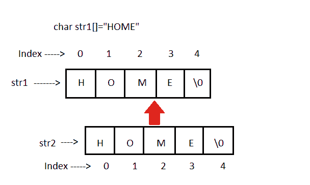
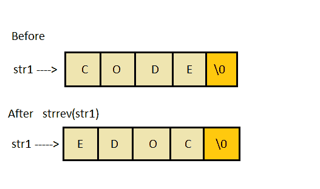

字符串和字符数组
原文：https://www.studytonight.com/c/string-and-character-array.php
字符串是被视为单个数据项的字符序列，以空字符'\0'结束。记住 C 语言不支持字符串作为数据类型。A 字符串实际上是 C 语言中的一维字符数组。这些通常用于创建有意义和可读的程序。
如果不知道 C 语言中的数组是什么意思，可以查看 C 数组教程，了解 C 语言中的数组。在继续之前，请查看以下文章:
例如:字符串“home”包含 5 个字符，包括编译器在字符串末尾自动添加的'\0'字符。

声明和初始化字符串变量:
// valid
char name[13] = "StudyTonight";
char name[10] = {'c','o','d','e','\0'};
// Illegal
char ch[3] = "hello";
char str[4];
str = "hello";
字符串输入和输出:
%s 格式说明符读取从终端输入的字符串。
但是 scanf() 函数会在遇到的第一个空格处终止输入。
编辑设置转换代码%[..】可用于读取包含多种字符的行，包括空格。
gets()功能也可以用来读取带有空格的字符串
char str[20];
printf("Enter a string");
scanf("%[^\n]", &str);
printf("%s", str);
char text[20];
gets(text);
printf("%s", text);
字符串处理函数:
C 语言支持大量的字符串处理功能，可以用来执行许多字符串操作。这些功能封装在 string.h 库中。因此，您必须在程序中包含 string.h 头文件才能使用这些功能。
以下是最常用的字符串处理函数。
| 方法 | 描述 |
| strcat() | 它用于连接(组合)两个字符串 |
| strlen() | 它用于显示字符串的长度 |
| strrev() | 它用于显示字符串的反转 |
| strcpy() | 将一个字符串复制到另一个字符串中 |
| strcmp() | 它用于比较两个字符串 |
strcat()功能在 C:

语法:
strcat("hello", "world");
strcat()将把字符串“世界”添加到“你好”即 ouput = helloworld。
strlen()和strcmp()功能:
strlen()将返回传递给它的字符串的长度，strcmp()将返回两个字符串的第一个不匹配字符之间的 ASCII 差异。
int j = strlen("studytonight");
int i=strcmp("study ", "tonight");
printf("%d %d",j,i);
12 -1
strcpy()功能:
它将第二个字符串参数复制到第一个字符串参数。

strcpy()功能示例:
#include<stdio.h>
#include<string.h>
int main()
{
char s1[50], s2[50];
strcpy(s1, "StudyTonight");
strcpy(s2, s1);
printf("%s\n", s2);
return(0);
}
今晚学习
strrev()功能:
它用于反转给定的字符串表达式。

strrev()的代码片段:
#include <stdio.h>
int main()
{
char s1[50];
printf("Enter your string: ");
gets(s1);
printf("\nYour reverse string is: %s",strrev(s1));
return(0);
}
输入你的字符串:今晚学习 你的反串是:thginotyduts
相关教程: